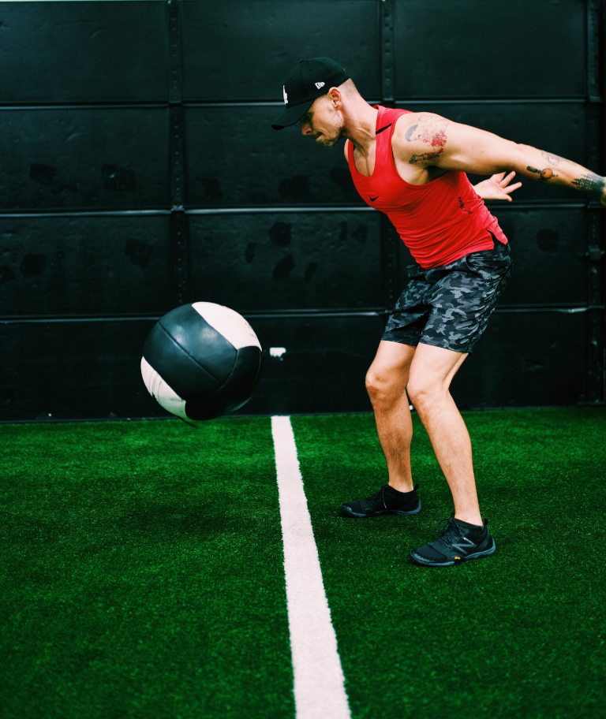
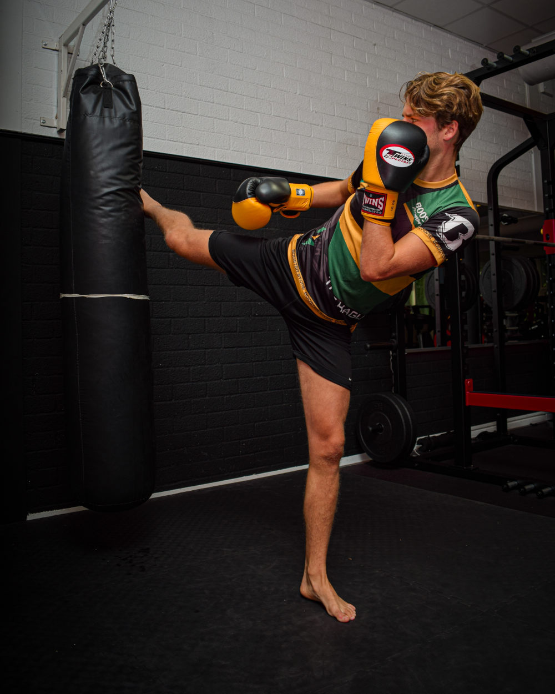

By Coach Matt | 20 min read
Training For Sport
While I love distilling complex ideas into digestible nuggets of knowledge, explaining how to write a training program that properly balances the stresses of sport practice, weight lifting and cardio requires digging into the topic a bit so that you understand why it's a good idea to arrange things in a particular way.
I'm not going to try to cover every possible angle. Instead, I will cover a handful of important concepts that should give you a broad understanding of how to structure a training program in such a way that you can progress multiple qualities simultaneously without getting physically and psychologically burnt out within a few weeks. The more total volume you try to fit into your training week, the easier it is to overdo things. This is especially true when you're incorporating several different styles of training that are all uniquely demanding.
Before we get into the how, it's important that you first appreciate the why; you may already accept that resistance training and cardio are valuable assets for enhancing performance and longevity as an athlete, but a lot of people don't understand why they should do anything other than simply practice their sport. While you might be hard-pressed to find a football player who doesn't appreciate the value of heavy weight lifting, some people think it would be detrimental to their sport to lift weights or add cardio, often due to lifting being at best underestimated, at worst straight-up denigrated within the athletic communities they're familiar with.
For example, I had a kung fu instructor years ago who taught me exactly that: "Don't lift weights, it'll just make you slow and inflexible. All you need to do is practice kung fu." He couldn't have been more wrong, but this kind of thinking still persists in many circles. For anyone who is at least a little skeptical that lifting or cardio are worth the time and effort, let's start with a brief examination of why it might be a good idea for athletes to incorporate at least some of both into their training program.
(If you're already sold on the benefits of lifting and cardio for enhancing sport performance, you can probably just skip to the next section)
How can lifting & cardio help you as an athlete?
Building strength and power through resistance training facilitates the kind of explosive movement, speed, endurance and capacity for quick recovery that is integral to so many sports. In short: it can enhance your performance! If you want to run faster, jump higher, strike and throw harder, grip tighter, etc., then lifting weights will help. Even if all you want to do is run or snowboard without tiring so quickly and dealing with achy joints, lifting can help. Stronger muscles and tendons, denser bones, and more resilient joints can significantly reduce the risks and severity of injury and pain, especially in any sport that involves high levels of impact and joint stress.
That said, there IS a point of diminishing returns. Eventually, adding more weight to your squat will no longer improve your 100m sprint or vertical jump, but taking someone from a 150 lbs squat to a 300 lbs squat is going to noticeably improve their performance in a variety of sport movements, and as a nice bonus: normal life challenges and activities will become much easier too.
At this point, someone might ask "Why not just run, jump, throw, etc. to build all those qualities AND get specific skill practice for your sport?" That's a fair question. Practicing your sport will certainly cause your body to adapt by getting stronger and faster, but there are two major limitations to this approach:
- It's difficult to apply the principle of progressive overload without turning sport practice into an awkward, less-effective version of lifting.
- Depending on the sport, it may not be safe or healthy for your joints to just do more practice for the sake of building strength, muscle and endurance.
Some karate schools will have students squat with someone sitting on their shoulders as a form of strength training, and honestly that is a fairly effective way to build strength and size in the legs. I mean, squatting is such a great movement for athletes that even unorthodox variations like that warrant some respect. They've generally got the right idea, but it's still more effective and less exhausting to slowly progress your barbell squats and lunges over time with structured lifting sessions.
With some sports, it can be fairly effective to simply focus on additional practice. If you're a cyclist, biking harder and more often can build your leg size, strength and endurance with little risk of pain or injury, due to how negligible the impact is. Dedicated lifting for the lower body is still a great idea for best results, but the risk/reward ratio with cycling is pretty solid; if you have the time, have the desire, and your butt is used to the tiny seat, simply logging more and more miles over my challenging terrain will make you a better cyclist without destroying your joints.
On the other hand, if you practice a high-impact sport like parkour, it's NOT a good idea to try and build leg strength by simply jumping to and from high ledges more often. If you practice BJJ, repeatedly muscling your way out of arm-bars is a terrible substitute for curl variations, not to mention it's sloppy technique. If you are a boxer, there are much safer ways to strengthen your neck than to simply take more blows to the head during practice.
 For sports like parkour, squats are far safer and more effective for building leg strength than just doing more and bigger jumps
For sports like parkour, squats are far safer and more effective for building leg strength than just doing more and bigger jumps
When it comes to cardio, this is actually where it makes the most sense to spend more time practicing your sport, so long as that practice doesn't beat you up and fatigue you too much. Having a great aerobic capacity will help you train longer and recover more quickly from any and all kinds of physical activity, but practicing the specific movements and positions of your sport will give you the specific adaptations you need to be as efficient as possible. Endurance isn't just about having better overall cardiovascular fitness or a high VO² max: the movement efficiency that comes with having deeply ingrained motor patterns is a big part of the picture, and you can only get that kind of fine-tuned motor skill through many hours of practicing your sport.
Consider the fact that Lance Armstrong ran the Boston marathon in 2008 and barely broke the top 500. He obviously had world-class endurance and aerobic capacity, and top 500 in the Boston is nothing to scoff at, but it goes to show that our body adapts to the specific movements we train; general fitness doesn't translate into novel activities as much as we would like. If you want to have more endurance while sparring or swimming, extra cardio will certainly help but there's no substitute for simply doing more sparring and swimming.
That being said, sometimes it's not realistic to add more sport practice. If your sport is a bit too intense to make for effective aerobic exercise, or practice is hard on your joints, supplementing with dedicated cardio workouts makes a lot more sense.
It could be that there are only a few BJJ classes at the gym you go to that fit your schedule, or perhaps unfavorable weather impedes your ability to consistently get outside for practicing soccer or ultimate frisbee. Maybe you can only do so many rounds on the heavy bag before your wrists and shoulders ache too much to keep drilling those hard strikes.
If you are unable to get in several sessions of sport training a week, or it's impractical to train at a light and steady-enough pace to effectively build aerobic capacity (for example, sports like baseball tend to involve so much downtime that just playing more isn't an effective way to train the aerobic system), then programming dedicated cardio workouts into your training week is the next best thing for building up your endurance and capacity to recover.
One last thing to consider is that every sport is going to emphasize a limited set of movements and demands while neglecting others. Rock climbing significantly stresses all the pulling muscles in your back, but does very little to train your pressing muscles. Cycling works the legs hard, but your upper body is mostly just along for the ride. Rounds of boxing are great for building anaerobic endurance, but unless you like to shadowbox for 30+ minutes straight you'll need some supplemental exercise to build aerobic endurance. In the interest of maintaining overall balance and keeping your body well-rounded, you might consider using lifting and cardio to train the movements and energy systems that are neglected in your sport.
To summarize: lifting and cardio will both make you a better athlete in their own way. Weight training helps you build speed and power while increasing your joints' tolerance to stress and impact, while cardio gives you the ability to consistently perform at a high level without gassing out, and it helps you recover more quickly between each effort so you don't need to rest as long or often. If you use them both to train the underdeveloped movements and capacities your sport tends to neglect, they can help you maintain better overall fitness and balance.
How to structure your training week
Now that we're all on the same page with the value of supplemental lifting and cardio, the first thing you want to understand is that your training week should transition from periods of higher intensity work to periods of lower intensity work, rather than trying to maintain a consistent intensity day after day.
This allows you to consolidate specific types of stress in order to maximize the time your body can recover before you perform that same kind of work again.
While lifting, cardio and sport practice may seem like completely different activities, and in many ways they are, what they all have in common is that the type of activity you perform is going to stress one of your three energy systems more than the others. Each have modalities ranging from heavy and intense to light and easy, and it's important that your training week gradually tapers from one end of the spectrum to the other.
Anaerobic Alactic:
- Near-maximal intensity
- Very heavy or explosive
- Short duration up to 10 seconds
- Demands serious focus and effort
- Performance severely affected by fatigue
Lifting:
- Heavy strength or power work in the 1-3 rep range
- A few jumps or medicine ball throws taken one at a time
Cardio:
- High intensity intervals up to 10 seconds
- Sprinting 10-100m
Sport:
- Football lineman smashing into the tackle sled
- Boxers drilling hard strikes on pads or a heavy bag
- Grapplers drilling takedowns and explosive escapes
- Baseball players practicing hard throws and batting
Anaerobic Lactic:
- Moderate to high intensity
- Moderate to high rep range
- 10 seconds to a few minutes
- Requires moderate focus and effort
- Performance fairly tolerant of fatigue
Lifting:
- Hard sets of 3-30 reps
- Multiple consecutive jumps and throws
- Conditioning circuits and complexes
Cardio:
- High intensity intervals lasting 15 seconds to 3 minutes
- Sprinting 200-800m
Sport:
- Football players running longer plays and scrimmaging
- Boxers doing 3 minute rounds of hard sparring or bag work
- Grapplers drilling attack sequences and rolling for short rounds
- Cyclists practicing hill climbs
Aerobic:
- Low to moderate intensity
- Very high rep range
- A few minutes to several hours
- Relatively low effort, you can "zone out"
- Performance minimally affected by fatigue
Lifting:
- Light sets of 30+ reps
- Easy circuits at a steady pace
Cardio:
- Moderately intense intervals of several minutes
- Running a mile or longer
Sport:
- Football players drilling plays at a low intensity
- Boxers shadow boxing or light sparring for several minutes
- Grapplers rolling for long easy "flow" sessions
- Rock climbers casually bouldering far below their limits
While these are simplified summaries that leave out details such as fiber type recruitment, neural drive, substrate utilization, etc., the important point is that you can roughly divide types of activity along a spectrum with three major categories; each one stresses the body in unique ways, so if we rotate between them intelligently we can juggle the stresses of our training so as to fit a large amount of total volume into our program without burning out.
Note that there is often overlap between these systems, i.e. it's not as simple as one "turning off" as another kicks in; it's more like they work together to contribute varying levels of energy at different points in an activity.
For example, aerobic energy contribution to the 400m sprint has been estimated to lie somewhere between 18% and 70%, depending on the measurement used and the capacities of the athletes tested. This is part of the reason why building a decent aerobic capacity helps with performance and recovery in all kinds of activities, even those that are largely anaerobic in nature.
Anaerobic activities like sprinting still use the aerobic system for energyDoes it matter in what order you cycle through these kinds of activities? YES, largely due to how fatigue tolerant each one is. As a general rule of thumb: perform the kinds of activities that require the most focus, coordination and intensity of effort while you have the least amount of fatigue. This means put them early in the session, day or week.
Perform the kinds of activities that require the most focus, coordination and intensity of effort while you have the least amount of fatigue.
Let's imagine you're doing a workout focused on the lower body and want to perform the following: heavy sets of 2 on the back squat, some high-rep sets of 10-20 on the leg press, and a 5K run. How we order these activities can make a significant difference in performance. If your legs and brain are both physically and psychologically fatigued from doing the leg presses and run first, there's no way you're going to be able to squat nearly as much weight with as solid of form as you could if you did the squats first thing while you were still fresh and focused.
The inverse is not true, however. If your legs are tired from heavy squats and leg presses, this won't have nearly the same impact on the 5K run. Sure, your legs may feel a bit wobbly at first, but jogging doesn't require a lot of leg strength, neural drive or precise technique, so after a few minutes you can kind of "zone out" in a way that would be less-than-advisable for heavy, hard sets of lifting.
Begin with:
- Heavy
- High-impact
- High effort
- Explosive
- Technical
End with:
- Light
- Low-impact
- Low effort
- Slow
- Simple
Start the session/day/week with whatever activities require you to be fresh and focused for a maximal effort, then gradually transition into the activities that are less affected by accumulating levels of fatigue. While a lot of people may slog through plyometric exercises like throwing and jumping while exhausted, without ever considering the negative impact of being so tired, heavy and explosive exercises work much better when you minimize fatigue in order to maximize performance.
 Explosive drills like medicine ball slams aren't nearly as effective if you're too fatigued to give a max effortOne thing to keep in mind is fatigue tolerance includes joint fatigue and the risk of minor injuries and strains, as hard lifting sessions can be significantly impacted by this. For example, if you want to do some hard rounds on the heavy bag and also want to get some heavy pressing in on that same day, it's best to perform the lifting first because the wrist and shoulder fatigue from striking the bag can severely hamper your pressing performance afterward. Imagine you tweak your wrist just a little on an awkward punch; that's enough to severely hamper your ability to press later with any appreciable load.
A couple other examples would be squatting early in the day and practicing parkour or sprinting later, as the slightest knee pain or hamstring tweak can ruin a heavy squat session. Get your sets of arms and shoulders in before you go to grappling class later, because if someone cranks an arm-bar or kimura just a touch too hard then good luck doing curls or lateral raises pain-free afterward.
Any sport practice that is hard on the joints and presents an appreciable risk of injury, however minor, is best saved for after your lifting whenever possible. While weight training itself carries a risk of injury, the movements are generally far more predictable, consistent and controlled compared to the chaos of striking bags, grappling humans, jumping off ledges, etc. The loading to the joints also tends to be significantly higher, especially if you have built a decent level of strength, so it's best to load them while they are fresh and feeling the best. Lifting can be wonderful for joint health and pain management, so long as you are smart about when and how you do it.
With all these ideal progressions and sequences in mind, let's take the example of a boxer who goes to the boxing gym Mon/Wed/Fri but also wants to fit in some lifting and cardio around that. Here's what a general outline for the week might look like:
BOXING
Monday:
- AM Lifting: Heavy lower body session; medicine ball throws
- PM Boxing: Explosive striking drills; hard rounds on the heavy bag
Tuesday:
- Lifting: Heavy upper body session
- Cardio: 30-40 min run at brisk pace
Wednesday:
- Boxing: Moderate intensity pad drills; high contact sparring
Thursday:
- Lifting: Full body hypertrophy session
Friday:
- Boxing: Speed bag; light sparring; shadow boxing
- Cardio: Easy 5 minute jump rope intervals
Saturday:
- REST
Sunday:
- Cardio: Long easy jog
Notice that the week is front-loaded with the heavy, hard, high-impact sessions. Monday & Tuesday are both challenging days for sure, easily the hardest of the week, but you will be as fresh as possible in order to maximize performance and minimize risk of injury. After you get through those two sessions, you'll have the entire rest of the week to recover before having to do that specific kind of work again.
 Sparring at the end of a hard training week when you're exhausted leads to sloppy technique and bad habits
Sparring at the end of a hard training week when you're exhausted leads to sloppy technique and bad habits
The rest of the week tapers off into progressively lighter and easier activity, eventually ending with a long cardio session that will be minimally affected by the achy joints, tired muscles and psychological fatigue you've accumulated up to that point. It will be a welcome relief to be able to just zone out with a simple low-intensity session like that, and all that low-impact movement and blood flow can actually help you recover more than another day of rest would.
Don't focus too much on the specific modalities, as what's most important is the TYPE of activity; the Sunday cardio could just as easily be a bike ride or an easy hike.
Exercise Selection
I've mentioned a handful of specific exercises such as squats, leg presses, sprints and medicine ball slams. What these all have in common is they are basic, traditional exercises that allow you to maximize the qualities they are meant to train:
- Squats allow heavy loads that are great for strength.
- Leg presses let you safely train to failure for hypertrophy.
- Sprinting trains athletic acceleration of the entire body.
- Slams involve explosive speed for rate of force development.
What you want to avoid is falling into the dark side of "functional training" by trying to mimic sport moves during your lifting. Punching the air while holding dumbbells, doing parkour while wearing a weighted vest, adding knee strikes to the end of a reverse lunge, squatting while standing on a BOSU ball, and other similarly monstrous "combination" exercises are the worst of both worlds: they're neither effective for lifting nor are they effective for skill practice.
Keep your lifting separate from your skill practice. Trying to combine the two is almost always a mistake. You don't need to overcomplicate your exercise selection in order to make it "sport specific". Practicing your sport with proper technique is the most sport-specific training you can do, so when you're lifting use that time to build strength, muscle and power with basic movements that allow the purest expression thereof.
Keep your lifting separate from your skill practice. Trying to combine the two is almost always a mistake.
Impact of Soreness
One important aspect of juggling multiple sessions throughout the week is making sure overlapping soreness doesn't ruin performance. Delayed onset muscle soreness, or DOMS, often peaks two days after a session. This is another aspect of fatigue tolerance: if your legs are sore from a hard squat session a couple days earlier, that is going to severely impact your ability to practice kicks in a Muay Thai class, but it will have minimal effect on a long easy bike ride.
 Some activities are minimally impacted by muscle soreness, but this isn't one of themThe more experience you have with various activities, including where, when and how sore they make you, the better you can anticipate when you will be the most affected. This self-knowledge will help you arrange your activities accordingly in order to minimize negative performance impact. If the Monday workout above was pressing, that's more likely to interfere with the striking and sparring on Wednesday since that's when arms will probably be the most stiff and inflamed. If you find that your soreness is most intense the next day or maybe on the third day (48 hours isn't a law, just a general trend), then you'll want to adjust and rearrange your program accordingly to avoid training through peak DOMS with anything that is significantly affected.
Managing Volume
One thing that is missing from the example boxing template I offered above is specific sets and reps for the lifting. While there are a lot of variables that will affect what kind of volume you need for each session, in general you'll want to err on the side of doing too little rather than doing too much, especially if you are just starting to juggle lifting/cardio/sport for the first time. Remember, managing fatigue is a critical piece of the puzzle; doing too much in any one session will often cost you more than it will give you. In other words, when you have several other workouts planned for later in the week you need to save some energy, at least for the first few weeks when you're still learning how the current program affects you.
Don't be afraid to start with just 2 hard sets for major movements in your strength training. A couple heavy sets of 3-6 on compound movements like squat, deadlift, power clean and bench press can be enough to make incremental progress while leaving plenty of energy for the rest of your program.
That phrase "incremental progress" should serve as your metric for whether you actually need more volume; if you're able to add a little weight or a couple reps each session, then you're doing enough to progress. If you stall out for a couple weeks and the weights feel exactly as heavy as they did before, consider adding a little more volume, either another set for your main movement or more volume for your accessory work like back raises, hamstring curls, tricep press-downs, etc.
This applies to cardio as well. Start on the low end of volume with 20-30 minute aerobic sessions and 3-5 rounds for intervals, then slowly build up from there with faster pacing, higher inclines, shorter rest periods, etc. You don't need to smash yourself right from the beginning. It's totally fine to end a cardio session feeling like you could have done more and then bumping up the volume/pace/resistance next time.
You don't need to smash yourself right from the beginning.
One of the biggest mistakes people make when trying to add lifting and cardio on top of their sport training is they insert an entire program that is meant to be performed on its own, i.e. they'll simply add a 12 week squat program or a "Couch to 5K" program that was never intended to be done alongside 3x/week of sport practice and then they quickly, predictably, burn out as a result of the excessive volume.
If you don't have a coach programming for you, and aren't yet ready to build your own programs from scratch, you can still use templates you find on the internet, just keep in mind that unless it specifically says it is designed to be ran concurrently with other types of training, you will need to significantly cut down the volume. Change the sets of 4 to sets of 2, cut out the last couple accessory movements, reduce the HIIT for 8 rounds to 3-4 rounds, cut the two hard 40 minute runs a week down to one 20-30 minute run, etc.
You can always slowly reintroduce volume and frequency over the course of several weeks, so long as you are recovering from the current amount, i.e. you're making progress and not feeling like complete dog shit. I understand the desire to push hard and maximize results, but every eager athlete needs to remind themselves regularly that results take time. Instead of trying to get the most you can out of the first week, think of how to get the most out of the next three months. Leaving yourself room to progress and steadily working toward the maximum volume you can still recover from is the best way to play the long game.
Managing Recovery
With all this talk about sequencing and structure, performance and fatigue, frequency and volume, now is a good time to emphasize the key piece of the puzzle that everything else ultimately rests on top of: recovery.
In short, you can have a beautifully structured program that's a complex balance of lifting, cardio and sport practice interwoven and undulating throughout the week, but if you don't optimize your recovery you simply won't be able to handle the work for very long. Instead of progressing you will quickly begin regressing, i.e. getting weaker and slower while feeling increasingly burnt out.
I've tried to make it clear that things like proper sequencing and volume are important for avoiding excessive overreaching and poor performance, but these are secondary considerations to the importance of adequate nutrition, sleep and stress management. Even a relatively low weekly volume can be too much if your recovery is poor.
I could write an entire article on this topic, so let me just give you the key notes.
Nutrition:
- Don't skimp on the carbohydrates
- Get plenty of protein
- Eat plenty of nutrient dense foods
If you're doing a significant amount of lifting, cardio and sport practice throughout the week, you are likely going to need several hundred grams of carbs on training days in order to optimize performance and recovery, especially if you're a large male.
At the very least, make sure you are prioritizing starchy carbs like potatoes and rice in the meal following every training session.
Aim for close to 1g per pound of bodyweight. You don't need much more than that, but the further you are from that target the more likely it is that you will recover and progress better by adding protein.
Fruits, vegetables, whole grains, healthy fats, etc. Minimize the chances of developing any sort of nutrient deficiency that could lead to suboptimal recovery. That doesn't mean you should never have a delicious, heavenly Reese's peanut butter cup; just make sure your diet consists of a large variety of healthy foods.
Sleep:
- Get 6-8 hours consistently
- Get high quality sleep
Lack of sleep makes it extremely difficult to perform and recover from a large weekly total of challenging exercise. Rather than lowering the volume and frequency of training in order to compensate for poor sleep habits, optimize your sleep schedule in order to train as much and as hard as you are otherwise willing and capable.
I outlined 6 Tips for Better Sleep in a previous article, so check that out if you want some insight into how you can maximize the hours you are getting.
Stress:
- Make time to relax
- Include easy aerobic sessions
- Make time for stretching and massage
With all the intense exercise required to juggle lifting, cardio and sport training, it's important to make room in your week for relaxing downtime. Bake some bread, play some video games, read a good book, or do whatever kind of activity you can get absorbed in that makes you feel mentally rejuvenated afterward.
Longer cardio sessions at 70-80% of your max heart rate aren't just great for building endurance, they also have an incredible effect on mood elevation and can help you to relax, which is why getting more easy cardio is one of the 6 tips mentioned in my article on sleep.
Exercise is generally wonderful for combatting anxiety, but cardio seems to be especially potent in that regard, which is one of the reasons I like to include a long, easy aerobic session at the end of the training week. It helps you physically and mentally recover from a hard week of training so you're refreshed and ready to go again next week.
Whether we're talking about the occasional yoga class and professional massage or just sitting in your living room stretching and digging in with a foam roller or lacrosse ball, you're likely to frequently experience muscle stiffness from all this training and dedicated tissue work can help a lot. Spending even just 15 minutes here and there can feel amazing.
Don't underestimate the low-key stress that feeling exceptionally stiff can create; when every movement requires a little extra effort or causes a bit of discomfort, temporarily relieving yourself of that can feel better than you might realize. Even just massaging your feet a bit to relieve some of the aching stiffness from a long run can help you breathe a big sigh of relief and feel more relaxed afterward.
Weighing Priorities
With everything said thus far about how to structure and order things for optimal performance and fatigue management, I want to stress that, depending on your priorities, you may want to bend or even break some of these "rules".
I said above that it's generally a good idea to get your lifting in before your high-impact sport practice, mostly due to the fact that minor tweaks and strains sustained during practice can severely hamper your lifting, but the more you care about maximizing technical skill in your sport, and the less you care about your supplementary lifting, the more sense it makes to flip that order and lift after practice. This way you are practicing your sport when fresh and never running the risk of fatigue or injury from a lifting session hurting your sport training. While this is likely to regularly interfere with the performance of your lifting, if that's a low priority for you then you ought to structure your program accordingly. Put it on the back burner, so to speak.
On the other hand, if your sport training is mostly a hobby you do for fun and you are far more interested in maximizing your progress with weight training, especially if you are a competitive lifter, then you can effectively ignore the previous caveats about being careful not to practice when you have a lot of DOMS. If increasing your squat and/or leg size is a higher priority than performing optimally in your kickboxing classes, then train legs as often and as hard as you need to and just accept that your sport training is going to be a little lackluster as a result.
To use a personal example, I've regularly showed up to BJJ classes absolutely wrecked from a recent lifting workout, but that was always fine with me. I just took things extra easy and accepted that I was going to get tapped out even more than usual because I was moving like a hippo stuck in a pit of molasses.
This applies to cardio as well; if you have your sights set on training for a marathon or triathlon, your week is going to be filled with difficult endurance training that will leave you little extra energy for intense lifting or training of other sports. If the endurance races are top priority, then it might be best for your schedule to program heavy leg work later in the week after you've already done most of your quality cardio workouts, effectively sacrificing intensity and efficacy of the lifting in order to maximize volume and performance in your cardio sessions.
The overall point is that if one type of activity is significantly more important to you than the others, your programming should reflect that. Those sessions should be placed earlier in the week/day/session when you're fresh so you can get the most out of them, and everything else that's less of a priority should be squeezed in wherever you can fit it with intensity reduced as much as needed.
Closing Thoughts
We've covered quite a bit of ground here considering this is still just a bird's-eye view of the topic. While any one of the points made thus far could be expanded on in great detail, I have tried to include some nuanced considerations without getting mired in a lengthy exploration of all the possible angles. Hopefully you have a better understanding of how to program your lifting and cardio around sport practice than you did before you started reading this.
If you want to explore this topic further and learn about some of those details that were skimmed over or left out entirely, I highly recommend picking up The Hybrid Athlete by Alex Viada. It's a great book that goes deeper into the role of energy systems and nutrition, and it also includes several program templates for a variety of athletic pursuits.
If you prefer to watch an in-depth video over reading a book, you can find Balancing Weight Training and Brazilian Jiu-Jitsu by Mike Israetel on YouTube. While it specifically focuses on training considerations for BJJ, once you understand the core concepts you can apply them to any kind of sport.
I wish you the best of luck with your training endeavors. When in doubt, just remember the words of Thanos: the key to a solid training program is to ensure it's perfectly balanced, as all things should be.